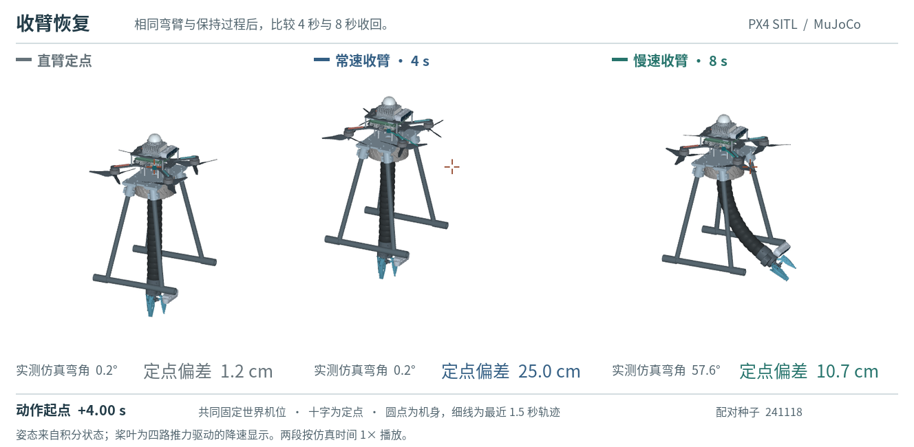
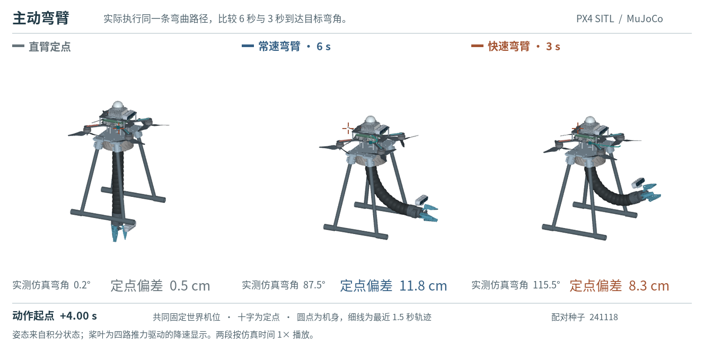
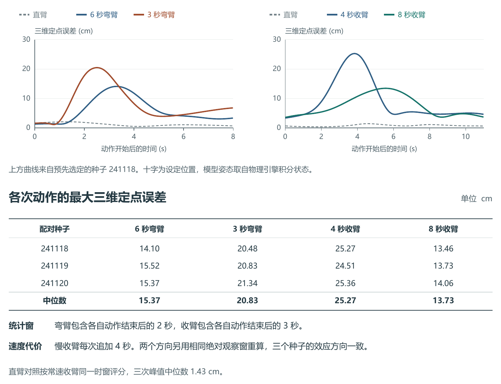
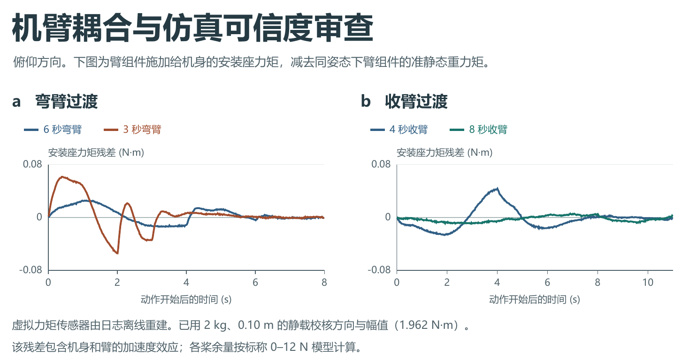

F+ · 空场机臂耦合 / 2026-11-19 00:54（北京时间）
弯臂和收臂速度会让机身偏移多少？
12 次独立 PX4 软件在环飞行。弯臂从 6 秒压到 3 秒，定点峰值中位数由 15.37 增至 20.83 cm。收臂从 4 秒延至 8 秒，峰值从 25.27 降至 13.73 cm。
大附件单独提供：241118 · 快速弯臂原始包、241118 · 常速弯收原始包、241118 · 慢速收臂原始包、241118 · 直臂定点原始包、241119 · 快速弯臂原始包、241119 · 常速弯收原始包、241119 · 慢速收臂原始包、241119 · 直臂定点原始包、241120 · 快速弯臂原始包、241120 · 常速弯收原始包、241120 · 慢速收臂原始包、241120 · 直臂定点原始包。
模型与场景

01同一世界机位下的收臂动作
收臂开始后第 4 秒。直臂、4 秒收臂、8 秒收臂处在同一个世界参考点和相机视角。


02以两种速度弯向同一角度
动作开始后第 4 秒。左列为直臂定点，中列与右列分别以 6 秒和 3 秒弯臂。

曲线与机制图

01三维定点偏差与三个配对结果
曲线为预先选定的种子 241118。表中列出每次独立运行，单位为厘米。


02安装座俯仰力矩的瞬态变化
力矩基于实际积分状态离线重建，扣除同姿态臂组件重力矩。

视频回放
01同步观看主动弯臂和收臂恢复
1 倍速、同一固定世界机位。十字为定点，细线跟随机身。桨叶相位按各桨推力降速显示。
论文与报告
第一页给出逐次结果，第二页说明安装座力矩、飞控与物理模型的验证范围、下一轮单门任务。
数据及运行记录
弯收各自窗口和统一时窗中的峰值、实际角速度、推力余量、倾角和安装座力矩。
各动作起始状态差异和最大偏移的配对差。
原生 ULog、ROS bag 和物理状态的对齐误差，各运行的源提交和 SHA-256。
按文件名核对下载的原始压缩包。
包括标称参数、任务时序、力矩参考点、后续实物标定和 G1 的公平比较方式。
先冻结三组噪声、原速与慢速设定、评分窗口和初态匹配阈值。
追加快速弯臂前单独登记，原收臂组的控制与分析保持相同。
原生 PX4 ULog、ROS bag、完整物理状态、250 Hz 下发与响应、运行版本及控制台记录。
原生 PX4 ULog、ROS bag、完整物理状态、250 Hz 下发与响应、运行版本及控制台记录。
原生 PX4 ULog、ROS bag、完整物理状态、250 Hz 下发与响应、运行版本及控制台记录。
原生 PX4 ULog、ROS bag、完整物理状态、250 Hz 下发与响应、运行版本及控制台记录。
原生 PX4 ULog、ROS bag、完整物理状态、250 Hz 下发与响应、运行版本及控制台记录。
原生 PX4 ULog、ROS bag、完整物理状态、250 Hz 下发与响应、运行版本及控制台记录。
原生 PX4 ULog、ROS bag、完整物理状态、250 Hz 下发与响应、运行版本及控制台记录。
原生 PX4 ULog、ROS bag、完整物理状态、250 Hz 下发与响应、运行版本及控制台记录。
原生 PX4 ULog、ROS bag、完整物理状态、250 Hz 下发与响应、运行版本及控制台记录。
原生 PX4 ULog、ROS bag、完整物理状态、250 Hz 下发与响应、运行版本及控制台记录。
原生 PX4 ULog、ROS bag、完整物理状态、250 Hz 下发与响应、运行版本及控制台记录。
原生 PX4 ULog、ROS bag、完整物理状态、250 Hz 下发与响应、运行版本及控制台记录。